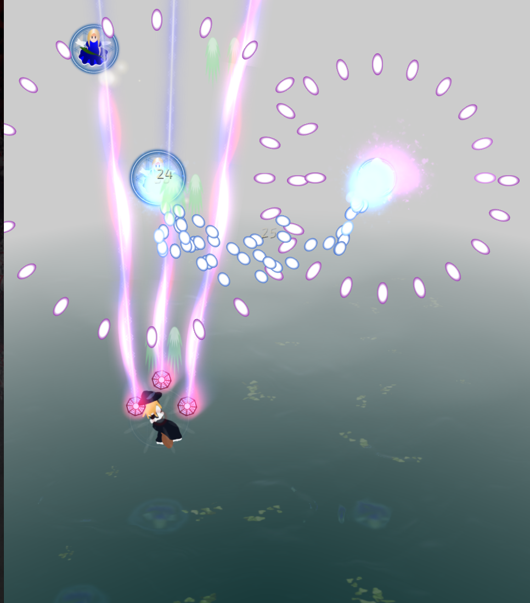

2026 嵌入式芯片与系统设计竞赛 · 易灵思 FPGA 赛道 · 赛题二
gfx2d
RISC-V + FPGA
2D 渲染加速引擎
RISC-V + FPGA
2D 渲染加速引擎
Ti60F225 · Sapphire RV32 SoC
DDR3 256 MB · HDMI 640×480@60
指标 Nmax：60 FPS 稳定时的同屏 Sprite 数
DDR3 256 MB · HDMI 640×480@60
指标 Nmax：60 FPS 稳定时的同屏 Sprite 数
[队伍名] · 2026-09-18
Taisei Project · CC BY-SA 4.0